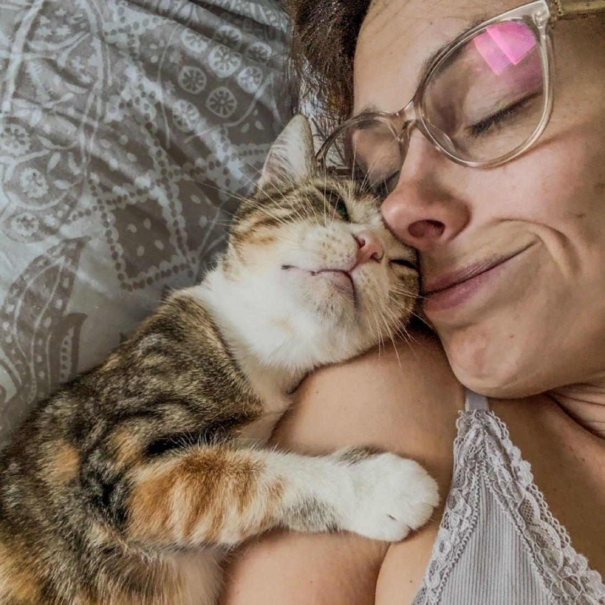
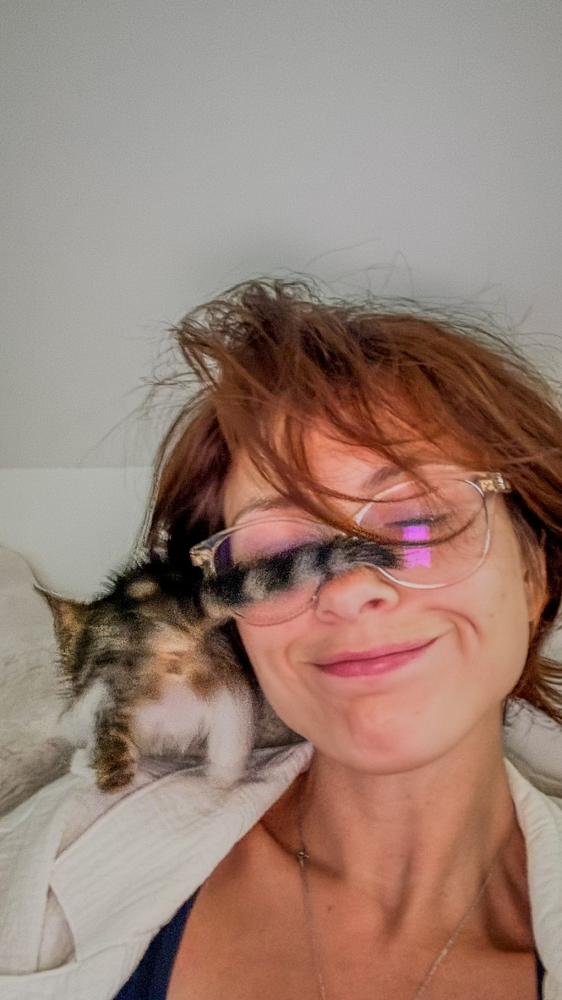
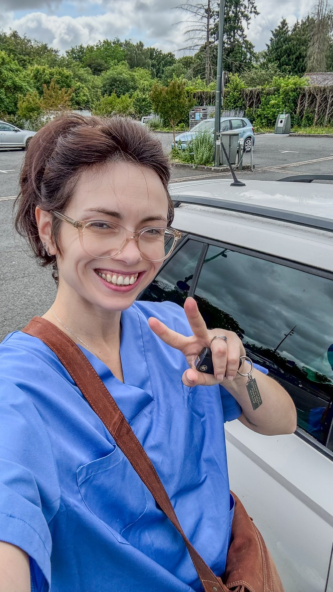

Ma méthode
J’aime trop les chats pour les prendre pour des humains.
Je suis Irina. Je conseille les humains sur le bien-être de leur chat. Je garde aussi des chats à domicile, autour de Châteaubourg.
Miaoucratie, c’est moi, seule. La même personne connaît votre chat d’un service à l’autre.
Enfant, je voulais déjà travailler avec les chats. On m’en a dissuadée. J’en ai fait mon métier à 38 ans.
Un trou sous la clôture
En juin, j’ai ramené Méli de Corfou. Lila, qui vivait déjà chez moi avec son frère Harry, n’avait rien demandé.
Puis sont venues les canicules, et j’ai accueilli 2 chatons en urgence. Ils vivaient sous les toits, à 43 degrés. Et l’aîné faisait des crises d’asthme.
Lila s’est éloignée. Elle passait ses journées au fond du jardin, à l’ombre. Elle feulait dès qu’un chat l’approchait, Harry compris. Puis j’ai trouvé un trou, creusé sous la clôture. Ce trou, c’était sa façon de dire que ça n’allait pas.
Ces changements, c’est moi qui les avais décidés. À moi de trouver ce qui manquait à Lila : du calme, et de quoi chasser. Le calme est revenu à la fin de la canicule, quand les chatons sont rentrés chez eux. Pour la chasse, j’ai multiplié les séances de jeu dehors.
Aujourd’hui, Lila joue avec Méli. En juillet, elle la repoussait.
Depuis, devant chaque chat qui pose problème, je suis le même chemin. Il tient en 4 temps.
1. J’observe le chat
Un chat ne se venge pas. Il va mal. Mon premier travail est de trouver pourquoi, en l’observant sur la durée.
Un chat ressent la peur et la douleur. La rancune et le caprice sont des mots d’humains.
Prenez la litière. On la range souvent là où elle gêne le moins : dans un placard, près de la machine à laver. Le chat finit par l’éviter. C’est trop fermé, trop bruyant. Et pendant qu’il fait ses besoins, il ne voit rien venir. Alors on la sort, même si ça fait désordre. Chez moi, après beaucoup d’essais, tous mes chats ont adopté le même bac : grand et ouvert.
2. J’écarte la douleur
Un chat qui change de comportement peut avoir mal, ou être malade. En août, Méli s’est mise à me suivre partout, plus que d’habitude. Quelque chose clochait. Peu après, elle n’urinait plus normalement et avait mal au ventre. Aux urgences, le vétérinaire a trouvé une cystite. Elle a été soignée.
Avant d’aller plus loin, je demande donc un avis vétérinaire. Si votre chat n’en a pas vu, j’attends ce rendez-vous.
Et si une autre personne compétente peut mieux vous aider, je vous le dis, même si je perds un client.
3. Je vérifie les preuves
Je pars de l’éthologie, la science du comportement animal. Face à une question, je lis les études. Les plus récentes en premier.
Une abonnée m’a demandé si les anti-stress pour chat marchent. J’ai passé au crible 82 publications scientifiques sur 11 produits, de Zylkène au CBD, en passant par Feliway. Résultat : aucun n’a fait ses preuves dans une étude indépendante.
Je conseille donc autre chose : des changements à la maison, et du matériel simple, comme un bac ou des jouets. Ce matériel, je le choisis d’après les études, puis mes chats le testent longtemps. Et je vous propose toujours une option maison, ou pas chère.
Ne me croyez pas, vérifiez par vous-même. Sur mon blog, chaque article cite ses sources.
4. J’adapte la maison
Adapter la maison, c’est souvent peu de chose : un bac déplacé, des séances de jeu, un accès dehors. Encore faut-il trouver lequel.
Michel avait 12 ans. Je l’ai accueilli pendant 8 mois. Son ancienne humaine voulait une meilleure vie pour lui, et l’avait confié à l’association. Il avait une diarrhée sévère, et se léchait jusqu’à perdre ses poils. La vétérinaire et moi avons compris que le stress y était pour beaucoup.
Restait à trouver ce qui le stressait. Ces dernières années, il passait beaucoup de temps dehors. Chez moi, à peine arrivé, il grimpait sur le radiateur pour atteindre le Velux. Il voulait sortir. Enfermé, il aurait fini par s’échapper. En temps normal, les chats de l’association ne sortent pas. Pour lui, l’association a fait une exception. Je l’ai laissé sortir peu à peu, sous mes yeux. Il ne s’éloignait jamais beaucoup. Il retrouvait ses habitudes.
Une femme attentionnée l’a ensuite adopté. Elle me donne souvent de ses nouvelles, et elles sont bonnes.
Chaque chat est unique, chaque maison aussi. Et ce qu’on voit au début n’est pas toujours ce qu’il faut régler : chez Lila, c’était un trou sous la clôture.
Je ne promets aucun résultat sur le comportement de votre chat : je n’ai pas de boule de cristal. C’est un travail de longue haleine, et on le mène ensemble. On cherche, puis on ajuste chez vous quand les choses bougent.
Mon parcours

Cette méthode vient de loin. Mes chats m’ont appris à repérer quand un chat va mal. Les études me disent si j’ai bien compris pourquoi.
J’avais 1 an quand mon premier chat est arrivé. Il y en a toujours eu depuis. En 2015, je suis devenue bénévole en protection féline. Chez moi sont passés des chats âgés, des chatons très jeunes, des chats à socialiser et des chats malades.
Aujourd’hui, j’ai 6 chats. Django, mon doyen, avait peur de tout à son arrivée, même des fruits. À 14 ans et demi, il a de l’arthrose. Pour lui, j’ai adapté la maison : un bac à rebord bas, ses jouets à portée de patte, un plaid chauffant réglé tout doux.
Entre mes chats, ça n’a pas toujours été simple : du stress, des maladies, des erreurs. Les miennes comprises. Leurs histoires, je les raconte sur Instagram.
En juil. 2026, Ouest-France et Le Journal de Vitré m’ont donné la parole. Entre autres sur les chats en pleine canicule.
Ma formation d’ingénieure m’a appris à lire une étude et ses chiffres. Je m’en sers pour le chat.
Un diplôme ne remplace pas le terrain, et l’inverse non plus. Alors je continue de me former, sur le chat avant tout. Ce que j’apprends, je le partage, souvent gratuitement. Sur mon blog, dans mes fiches repères, dans mes réponses à vos questions.
Autour du chat
- 2023Attestation de connaissances pour les animaux de compagnie, option Chat (ACACED), Zoopro
- 2026Premiers secours félin et canin, Karine DagornTransport d’animaux vivants, option Chiens et Chats, LOOFComprendre et accompagner le deuil animalier, SolâmeCongrès Pet Revolution, journée dédiée au Chat
- 2027Éthologie appliquée, option Chat, Animal UniversityPrendre soin du chat senior ou gériatrique, Equilicat
Webinaires réguliers sur le chat (stress, hydratation, reins, nutrition, chat âgé), notamment avec Fear Free Pets et EveryCat Health Foundation
Ma formation d’ingénieure
- 2010DUT informatique
- 2020Master en méthodes informatiques appliquées à la gestion des entreprises (MIAGE), option Traitement de données
Avec moi, ou pas
Voilà comment je travaille. Reste à savoir si ça vous convient.
Vous êtes au bon endroit si :
- vous voulez savoir ce qui se passe vraiment chez votre chat ;
- vous voulez chercher la cause avec moi, pas à pas.
Je ne suis pas la bonne personne si :
- vous cherchez une solution miracle, en flacon ou en séance ;
- vous voulez qu’on lise dans les pensées de votre chat ;
- vous ne souhaitez rien changer chez vous.
Si vous êtes au bon endroit, voici sur quoi compter.
Conditions de vente, tarifs, contrats : tout est écrit noir sur blanc, et je prends le temps de vous l’expliquer.
- Je m’engage à répondre sous 24 à 48 h, même en pleine saison
- Activité déclarée de cat-sitter, de comportementaliste félin et de conseillère en bien-être félin
- Responsabilité civile professionnelle pour chacune de ces activités
- Un contrat pour chaque garde, et un registre sanitaire à jour
- Règlement sanitaire validé par 2 vétérinaires référentes
- Médiateur de la consommation en cas de litige
Vous êtes au bon endroit ?
Écrivez-moiMa charte, en 7 principes
Ces 7 principes guident tout mon travail : les gardes, les conseils, le blog, le bénévolat, et mes propres chats.
- 1.
Respecter le chat. Il a le droit de dire non.
- 2.
Santé physique et mentale. Les deux comptent autant.
- 3.
Ne pas nuire. Aucun chat ne doit aller plus mal à cause de moi.
- 4.
Des preuves. Je conseille ce qui est prouvé, et je dis quand ça ne l’est pas.
- 5.
Partager ce que je sais. Généreusement, dans l’intérêt du chat : mon blog, mes fiches, Instagram, Facebook.
- 6.
Travailler ensemble. Personne ne sauve un chat seul. Quand un cas me dépasse, je demande à des collègues. Je compte aussi sur les vétérinaires et les associations.
- 7.
Apprendre, tout le temps. Tout le monde se trompe, moi comprise. L’essentiel : en apprendre et avancer.
Inspirée des principes Cat Friendly d’International Cat Care, association britannique dédiée au bien-être du chat
Une méthode, tous mes services

Cette méthode et ces principes valent pour chacun de mes services :
- Garde à domicile, autour de Châteaubourg
- Visite traitement : je vous montre le geste, vous le refaites devant moi
- Masterclass en visio, sur un sujet précis autour du chat : bientôt
- Bilan comportemental, chez vous ou en visio : à partir d’avril 2027
Mes engagements
Ces principes valent aussi hors de mon métier. Je reste bénévole, et j’aide 2 associations de mon coin.
Moustaches & Cie : solide, et là depuis longtemps. C’est elle qui a fait une exception pour Michel.
Les Papattes Douces : toute jeune. Des bénévoles avec qui j’ai travaillé l’ont fondée. Elle prend les chats qui demandent le plus : très malades, à socialiser ou âgés.
Espèce de Deuil
« Ce n’était qu’un chat. » Combien d’humains en deuil ont déjà entendu ça ? Ce chagrin, je refuse qu’on le balaie.
Alors j’apprends à l’accompagner, auprès de Marie Cibot, vétérinaire. Et je prépare un podcast pour en parler sans détour.
Marie y sera. Irène Combres aussi : elle a créé la Maison du Deuil Animalier.
Lila dort de nouveau dans le lit. Elle y prend toute la place.
C’est pour des chats comme elle, dont on lit mal les signaux, que je fais ce métier. Si le vôtre va mal, cherchons ensemble pourquoi.